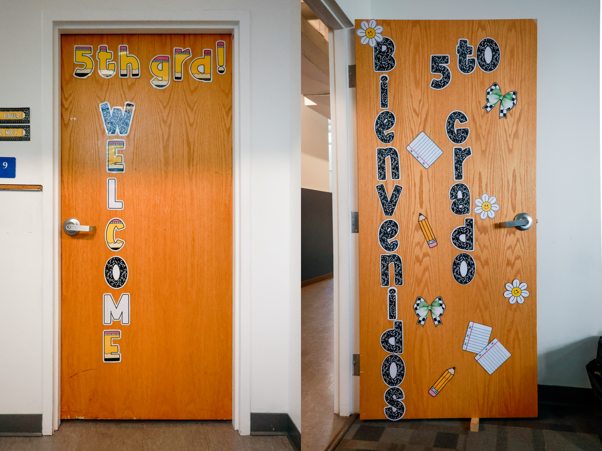
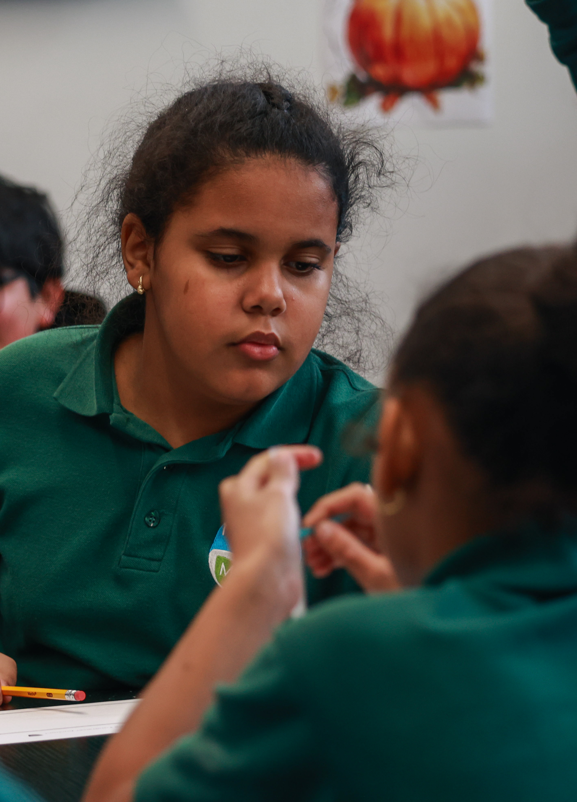
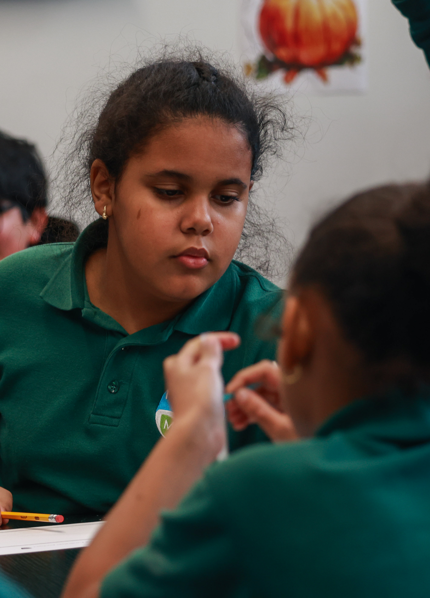

250 students, seven hours, two languages: One day at a bilingual school
The Herald visited the Nuestro Mundo Public Charter School on Oct. 24 to observe one day in a dual language immersion program.
Reporting by
Media by
Website by
On a brisk Friday morning in Lower South Providence, about 250 students flooded into the Nuestro Mundo Public Charter School. Around half of them went on to begin their days in classrooms where instruction is conducted entirely in Spanish, while the other half started out their first classes in English. Every day, each student receives instruction in both languages.
Founded in 2021, the K-8 school is one of two Spanish dual language immersion schools in Providence — a city where about one in three students speak Spanish as their first language.
The Herald visited Nuestro Mundo on Oct. 24 to observe a single day at a bilingual school.
Founded in 2021, the K-8 school is one of two Spanish dual language immersion schools in Providence — a city where about one in three students speak Spanish as their first language.
The Herald visited Nuestro Mundo on Oct. 24 to observe a single day at a bilingual school.

7:45 a.m.
Before Nuestro Mundo welcomes students, Program Director Katie Cardamone and her administrative team arrive early to prepare for the day.
With 250 students split across nine grades and moving between multiple buildings, running Nuestro Mundo takes a lot of “behind-the-scenes” logistics, said Superintendent Danira Vasquez in an interview with The Herald.
At the elementary level, each grade has two teachers: one “Spanish-side” teacher and one “English-side” teacher. Halfway through the day, students switch sides.
With 250 students split across nine grades and moving between multiple buildings, running Nuestro Mundo takes a lot of “behind-the-scenes” logistics, said Superintendent Danira Vasquez in an interview with The Herald.
At the elementary level, each grade has two teachers: one “Spanish-side” teacher and one “English-side” teacher. Halfway through the day, students switch sides.


8:05 a.m.
Every day, Vasquez and Erroll Lomba, the school’s student support specialist, race to announce the arrival of yellow school buses over the staff’s walkie talkies. “That’s how we get the staff going,” Lomba said. On Oct. 24, Vasquez got to her walkie talkie first.
The leadership team rushed outside, just before a sea of uniform-clad students spilled onto the sidewalk. “What’s goin’ on, man?” Lomba asked a passing student, leaning down to match the child’s height. “You not here yesterday? Why?” he asked another.
“As a kid (I) would walk into school pissed almost everyday,” Lomba said in an interview with The Herald. Now, as a school administrator, he wants kids who might feel the same way “to know that people are excited to see them.”
“I get to be the first person that greets them, who might make them laugh for the first time in the day. It matters,” he said.
The leadership team rushed outside, just before a sea of uniform-clad students spilled onto the sidewalk. “What’s goin’ on, man?” Lomba asked a passing student, leaning down to match the child’s height. “You not here yesterday? Why?” he asked another.
“As a kid (I) would walk into school pissed almost everyday,” Lomba said in an interview with The Herald. Now, as a school administrator, he wants kids who might feel the same way “to know that people are excited to see them.”
“I get to be the first person that greets them, who might make them laugh for the first time in the day. It matters,” he said.

8:25 a.m.
In neighboring rooms, two fifth-grade classes began instruction: one in Spanish, one in English. Both start each day with a morning meeting.
Spanish-side teacher Maryann Reyes put a prompt up on the board, asking students to write down two things they admire about a classmate. “He jumps like Michael Jordan,” one student shared about a peer. Another described a classmate as “amable,” a Spanish meaning friendly or kind.
Spanish-side teacher Maryann Reyes put a prompt up on the board, asking students to write down two things they admire about a classmate. “He jumps like Michael Jordan,” one student shared about a peer. Another described a classmate as “amable,” a Spanish meaning friendly or kind.

8:45 a.m.
At 8:45 a.m, the Spanish side moved into their science lesson. Class began with students reading aloud new vocabulary words: “clorofila,” “ecosystemia,” “la planta.”
In a mix of Spanish and English, students discussed how different elements of ecosystems work together: plants depend on the sun, soil and water, while animals depend on plants.
Science hasn’t been too exciting recently, fifth grader Alanis Tejada complained in an interview with The Herald. “We just read about stuff,” she said. Last month, the class got to do an experiment where they got to “make rain” in small cups. But Tejada is holding out hope: her teachers promised more experiments soon.
While Reyes only speaks Spanish during class time, the students follow the school’s language boundaries more loosely. When one student answered a question in English, Reyes gently redirected the class’s attention by having another student repeat it in Spanish.
In a mix of Spanish and English, students discussed how different elements of ecosystems work together: plants depend on the sun, soil and water, while animals depend on plants.
Science hasn’t been too exciting recently, fifth grader Alanis Tejada complained in an interview with The Herald. “We just read about stuff,” she said. Last month, the class got to do an experiment where they got to “make rain” in small cups. But Tejada is holding out hope: her teachers promised more experiments soon.
While Reyes only speaks Spanish during class time, the students follow the school’s language boundaries more loosely. When one student answered a question in English, Reyes gently redirected the class’s attention by having another student repeat it in Spanish.
 


10:00 a.m.
On the English side, it was time for math.
At tables clustered throughout the room, students wrote improper fractions and mixed numbers on scrap paper. Teacher Paula Fernandes called on some to scrawl their answers on whiteboards at the front of the classroom. In one corner, a one-to-one paraprofessional and a special educator helped coach students through the problems.
All teachers at Nuestro Mundo are also trained to provide scaffolding to support students with lower levels of proficiency in either language, Cardamone said. The school has recently hired multilingual tutors and interventionists to help provide additional support.
“I use many visual aids, bilingual materials and routines that allow them to express ideas in either language before reaching full proficiency in both,” wrote Spanish Language Arts and Social Studies Teacher Miguel Sánchez López in a message to The Herald. “We also work a lot on building confidence — reminding them that being bilingual is a superpower, not a limitation.”

11:00 a.m.
While the fifth graders continued with their core subjects, Nuestro Mundo’s fourth graders were gardening in the backyard of a school building around the corner.
The students visit the garden at different times of the year based on their class curricula, said Dan Penengo, whom students call “Farmer Dan.” Penengo is a staffer at Gather Farm in Johnston who regularly comes in to help Nuestro Mundo students in the garden.
Recently, seventh graders visited the garden to learn about compost, while kindergarteners planted tulip bulbs.
“It’s really important to me that there’s an opportunity for kids in this neighborhood in particular to interact with the earth,” said parent volunteer Jenna Legault.
The students visit the garden at different times of the year based on their class curricula, said Dan Penengo, whom students call “Farmer Dan.” Penengo is a staffer at Gather Farm in Johnston who regularly comes in to help Nuestro Mundo students in the garden.
Recently, seventh graders visited the garden to learn about compost, while kindergarteners planted tulip bulbs.
“It’s really important to me that there’s an opportunity for kids in this neighborhood in particular to interact with the earth,” said parent volunteer Jenna Legault.


12:20 p.m.
Just after noon, the cafeteria buzzed with hungry fifth graders eager to hang out with their friends.
A group of fifth grade boys pounced on the opportunity to loudly repeat “6 7,” referencing a popular TikTok trend. Fifth grader Beckham Gibb sadly told The Herald that “6 7” has been banned from class.
“I’ve told them there’s a time and place. During the morning, go for it. Get it out and say your ‘6 7s,’” Reyes said.
Gibb’s friend group mostly spoke in English during lunch. But Gibb and other students said they often mix in Spanish when socializing.
“We speak both,” said Noah Perez, another fifth grade student. “Mostly English, but we speak both.”
A group of fifth grade boys pounced on the opportunity to loudly repeat “6 7,” referencing a popular TikTok trend. Fifth grader Beckham Gibb sadly told The Herald that “6 7” has been banned from class.
“I’ve told them there’s a time and place. During the morning, go for it. Get it out and say your ‘6 7s,’” Reyes said.
Gibb’s friend group mostly spoke in English during lunch. But Gibb and other students said they often mix in Spanish when socializing.
“We speak both,” said Noah Perez, another fifth grade student. “Mostly English, but we speak both.”


12:40 p.m.
After some corralling by Lomba, the fifth graders headed outside for recess. Gibb and his friends played an intense game of tag, followed by several rounds of four-square. While Tejada sat at a picnic table chatting, fifth grader Biannet Frias Pacheco attempted the monkey bars.
The school has been undergoing extensive construction — they are building a gymnasium that borders the playground, as well as a middle school building and administrative spaces, according to Cardamone — that often prevents the students from having recess outside. During indoor recess, Gibb likes to play Jenga or shadow box, he said.
The school has been undergoing extensive construction — they are building a gymnasium that borders the playground, as well as a middle school building and administrative spaces, according to Cardamone — that often prevents the students from having recess outside. During indoor recess, Gibb likes to play Jenga or shadow box, he said.


1:00 p.m.
While the majority of fifth graders returned to their classrooms after recess, a select few made their way to “fish club” in the school’s main office. Lomba, affectionately known as “Mr. E” by Nuestro Mundo’s students, created the club on a whim after some students asked to help feed the fish in his office.
The club has become a favorite for several fifth graders. One girl added calcium to the fish tank, another checked off instructions on a to-do list and a third dropped food in — “just a pinch,” Lomba reminded them.
Luciana Sánchez Hurtado, who is Sánchez López’s daughter and a Nuestro Mundo fifth grader, occasionally attends fish club. Her favorite part of the school day, she said, is simply “when I am with Mr. E.”
Sánchez Hurtado grew up speaking mainly Spanish at home and began attending Nuestro Mundo in August. Now, the fifth grader “switches naturally” between both languages, according to Sánchez López.
The club has become a favorite for several fifth graders. One girl added calcium to the fish tank, another checked off instructions on a to-do list and a third dropped food in — “just a pinch,” Lomba reminded them.
Luciana Sánchez Hurtado, who is Sánchez López’s daughter and a Nuestro Mundo fifth grader, occasionally attends fish club. Her favorite part of the school day, she said, is simply “when I am with Mr. E.”
Sánchez Hurtado grew up speaking mainly Spanish at home and began attending Nuestro Mundo in August. Now, the fifth grader “switches naturally” between both languages, according to Sánchez López.


1:40 p.m.
When the school’s “enrichment” block began, the first fifth-grade cohort headed to art, and the second went to health class.
In art, the fifth graders made designs that older students will put on pots to auction off at a school fundraiser. Art Teacher Megan Tresca set guidelines: no Halloween or Christmas-themed art since “people of different religions celebrate different holidays.”
“And no ‘6 7,’” Tresca added, eliciting disappointed responses from the class.
Students settled on a variety of subjects, ranging from pumpkins to stick figures playing soccer to “Latinas 4 ever” scrawled next to a Dominican flag.
“I wish there was art everyday,” Frias Pacheco said.
In art, the fifth graders made designs that older students will put on pots to auction off at a school fundraiser. Art Teacher Megan Tresca set guidelines: no Halloween or Christmas-themed art since “people of different religions celebrate different holidays.”
“And no ‘6 7,’” Tresca added, eliciting disappointed responses from the class.
Students settled on a variety of subjects, ranging from pumpkins to stick figures playing soccer to “Latinas 4 ever” scrawled next to a Dominican flag.
“I wish there was art everyday,” Frias Pacheco said.

2:25 p.m.
Before dismissal, both the Spanish and English teachers hold an “intervention” period during which students complete individual work that is tailored “to what they need specifically,” said Reyes.

3:15 p.m.
At last, dismissal. In a grade-by-grade trickle, students filed out of the building onto the playground to meet their parents or onto the sidewalk to board buses home.
“My kids are happy when I pick them up from school,” said Ana Alvarado Perez, a Nuestro Mundo board member and the parent of fifth grader Noah and first grader Zoe.
While Gibb said Oct. 24 was a fairly typical day at school, excitement for the following week — “spirit week” — was already brewing. This past Monday, students dressed in red or orange to represent team “apple” or team “pumpkin.”
Tejada was most excited for Friday, Oct. 31, which will be “character day” at Nuestro Mundo. In her family, the “tradition is that we can’t dress up as anything scary” for Halloween, she said.
Honey Tejada, Alanis Tejada’s mom, is excited for spirit week, too. At Nuestro Mundo, “they celebrate a lot of different things,” and parents are often able to come in as volunteers, she said.
“My kids are happy when I pick them up from school,” said Ana Alvarado Perez, a Nuestro Mundo board member and the parent of fifth grader Noah and first grader Zoe.
While Gibb said Oct. 24 was a fairly typical day at school, excitement for the following week — “spirit week” — was already brewing. This past Monday, students dressed in red or orange to represent team “apple” or team “pumpkin.”
Tejada was most excited for Friday, Oct. 31, which will be “character day” at Nuestro Mundo. In her family, the “tradition is that we can’t dress up as anything scary” for Halloween, she said.
Honey Tejada, Alanis Tejada’s mom, is excited for spirit week, too. At Nuestro Mundo, “they celebrate a lot of different things,” and parents are often able to come in as volunteers, she said.


Looking ahead
This December, Nuestro Mundo is up for its first charter renewal, five years after its opening.
During the renewal process, each school is primarily evaluated for its financial health, the strength of its board of directors and its academic performance, according to the Rhode Island Department of Education’s Charter School Performance Review System.
Cardamone feels confident about the school’s performance in the first two categories. But in test scores, “we’re not where we want to be,” she said.
The percentage of students who demonstrate science proficiency is still in the single digits, according to RIDE. Despite a 100% increase in standardized test scores last year, just one in five students was classified as having met or exceeded expectations.
To Cardamone, this can be partly attributed to differences between bilingual and monolingual education.
“Because we are teaching those biliteracy skills and teaching them to compare and contrast the languages and make cross-linguistic connections,” Cardamone said, “it takes like five years to get them to a place where they are proficient in both languages.”
Research shows that simultaneous language acquisition can initially slow English vocabulary development.
Despite this, interest in the school is at an all-time high. Last year, over 900 students applied to attend Nuestro Mundo, said Marybel Martinez, the school’s family liaison, enrollment coordinator and data manager. Through Nuestro Mundo’s lottery admissions system, only about 80 were admitted.
“This school is so young and is still growing,” said Lomba, noting that it still needs time to “fully bloom.”
“This neighborhood deserves a place that’s respecting of young people and the languages that they come with,” he added.
This December, Nuestro Mundo is up for its first charter renewal, five years after its opening.
During the renewal process, each school is primarily evaluated for its financial health, the strength of its board of directors and its academic performance, according to the Rhode Island Department of Education’s Charter School Performance Review System.
Cardamone feels confident about the school’s performance in the first two categories. But in test scores, “we’re not where we want to be,” she said.
The percentage of students who demonstrate science proficiency is still in the single digits, according to RIDE. Despite a 100% increase in standardized test scores last year, just one in five students was classified as having met or exceeded expectations.
To Cardamone, this can be partly attributed to differences between bilingual and monolingual education.
“Because we are teaching those biliteracy skills and teaching them to compare and contrast the languages and make cross-linguistic connections,” Cardamone said, “it takes like five years to get them to a place where they are proficient in both languages.”
Research shows that simultaneous language acquisition can initially slow English vocabulary development.
Despite this, interest in the school is at an all-time high. Last year, over 900 students applied to attend Nuestro Mundo, said Marybel Martinez, the school’s family liaison, enrollment coordinator and data manager. Through Nuestro Mundo’s lottery admissions system, only about 80 were admitted.
“This school is so young and is still growing,” said Lomba, noting that it still needs time to “fully bloom.”
“This neighborhood deserves a place that’s respecting of young people and the languages that they come with,” he added.